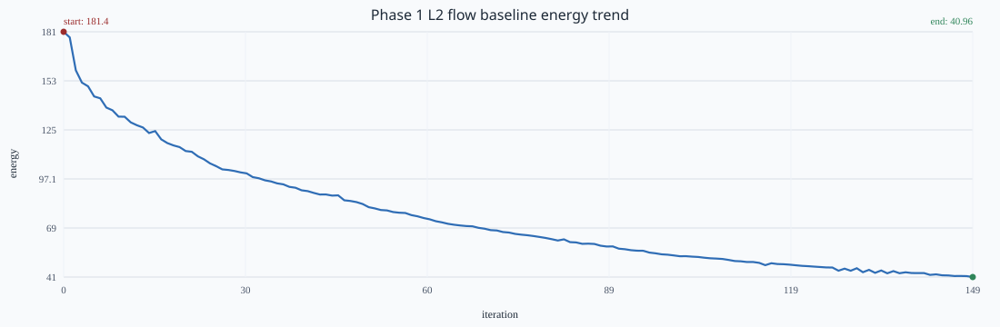
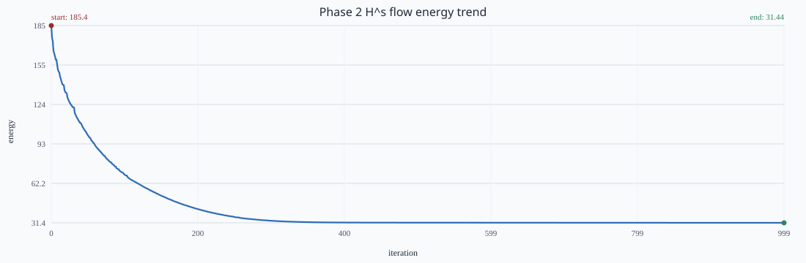
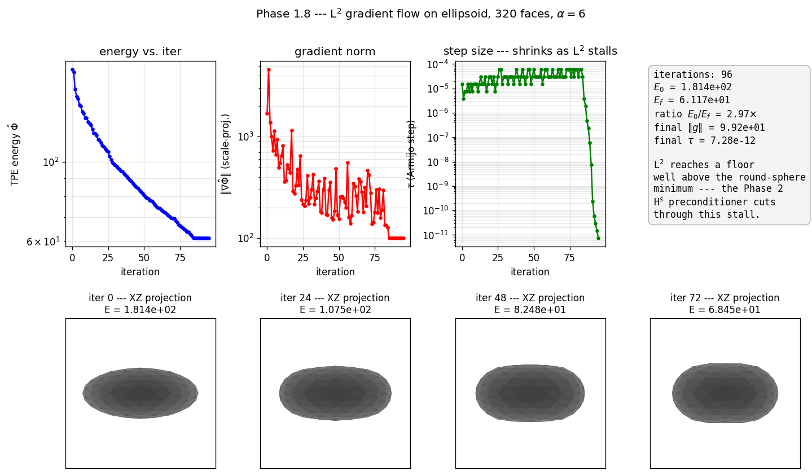

Collision-free optimization from a C++ systems build
We built a CPU/OpenMP-first C++ implementation of major pieces of the Repulsive Shells pipeline, centered on tangent-point repulsion to prevent self-intersections during shape optimization.
What we implemented, how, and why
The overall rendering pipeline for an object is staged as follows:- Mesh Representation and Normalization: Setting up a stable starting shape.
- Face-Geometry Preprocessing: Calculating necessary information for each face of the shape before optimization.
- Tangent-Point Energy (TPE): Using repulsive forces to stop the shape from intersecting with itself.
- Barnes-Hut Acceleration: Speeding up the repulsion calculations by grouping distant parts of the shape together using a Bounding Volume Hierarchy (BVH).
- Hs Preconditioning: Ensuring the optimization steps smoothly descend towards a better shape.
- Line Search and Constraints: Making sure each update is safe and maintains the required properties of the shape.
- Remeshing: Keeping the triangles that make up the shape well-proportioned during the whole process.
This is all wired through a custom core library
(rsh_core) with viewer-backed diagnostics and
regression-tested demos. Final outputs show stable
convergence across baseline flow, preconditioned
optimization, and compression-style sequence optimization.
src/core. The build is CMake-based with
optional Polyscope and optional Repulsor
cross-validation tooling.
- Derivative Mistakes: Complex math errors during energy calculations were caught early by implementing thorough finite-difference testing.
- Poor Descent Directions: Stability issues during Hs optimization steps were resolved by falling back to a safer method (identity-preconditioned GMRES) with explicit diagnostics.
- Team Capacity: A project partner had to drop the class unexpectedly, requiring the remaining team members to reallocate tasks and adapt to the reduced bandwidth.
Final outputs and measured behavior
Phase 1 Baseline: This test runs vanilla gradient descent (L2 flow) on the Barnes-Hut Tangent-Point Energy starting from an ellipsoid mesh, without any preconditioner or remeshing. The chart illustrates the energy decreasing rapidly at first but eventually stalling, demonstrating the ill-conditioned nature of the L2 gradient flow that motivates the need for a preconditioner.

out/phase1_flow/energy.csv, energy drops
from 181.414 to 40.9563 over 150 iterations (77.4%
reduction, 4.43x ratio).
Phase 2 Hs Flow: Using the same ellipsoid setup, this test applies the Hs preconditioner to compute the descent direction. The chart shows a stable, smooth energy descent over a large number of iterations without stalling, successfully rounding the shape toward a sphere.

out/phase2_hs_flow/energy.csv, energy drops
from 185.402 to 31.4393 over 1000 iterations (83.0%
reduction, 5.90x ratio), with long-run stable descent.

Animations
Papers, code, and tools
Primary papers
- Sassen, Schumacher, Rumpf, Crane (2024). Repulsive Shells. ACM SIGGRAPH.
- Yu, Brakensiek, Schumacher, Crane (2021). Repulsive Surfaces. ACM SIGGRAPH Asia.
- Yu, Schumacher, Crane (2021). Repulsive Curves.
- Strzelecki, von der Mosel (2013). Tangent-point repulsive potentials for nonlinear energies.
- Heeren, Rumpf, Wardetzky, Wirth (2012). Time-Discrete Geodesics in the Space of Shells.
Implementation dependencies
- C++17, CMake, Eigen3, OpenMesh, OpenMP, POSIX Threads
- Optional: NanoGUI/OpenGL viewer, Polyscope viewer, BLAS/LAPACK/OpenBLAS for cross-validation targets
- Nix/devenv tooling for reproducible local environment setup
Member Contributions
- Atharv:
- Daniel: Worked on the Hs preconditioner implementation, including the GMRES solver. Also worked on the tangent point energy implementation and its finite-difference testing framework.
- Michael: Worked on initial setup to lay groundwork for rest of the project. Implemented mesh data structure alongside a brute-force implementation of discrete TPE and its gradient.